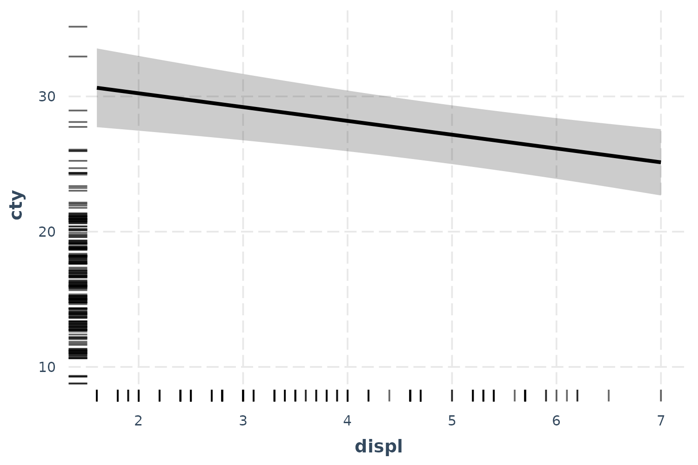
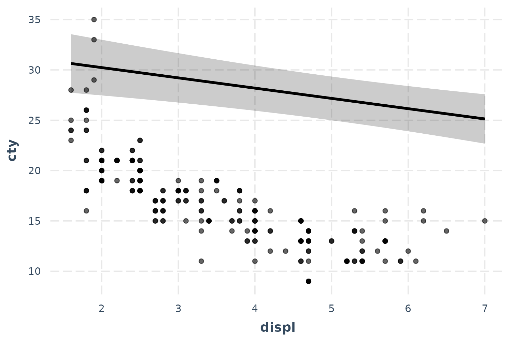
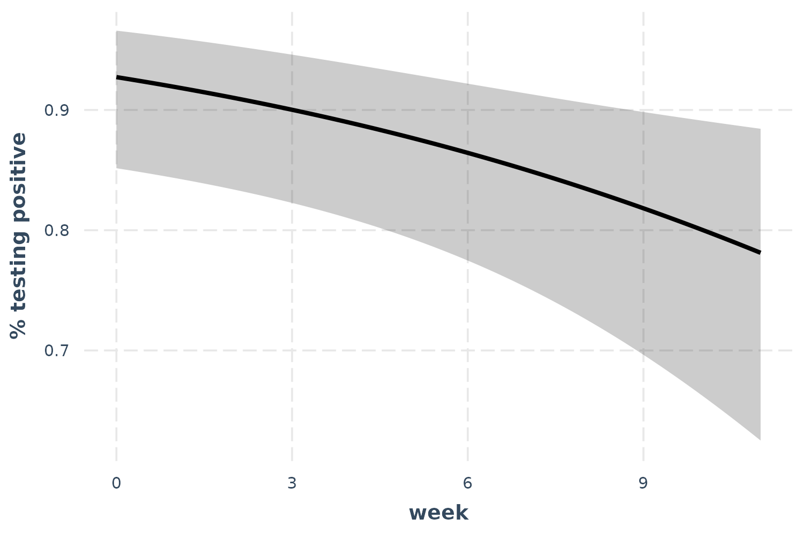
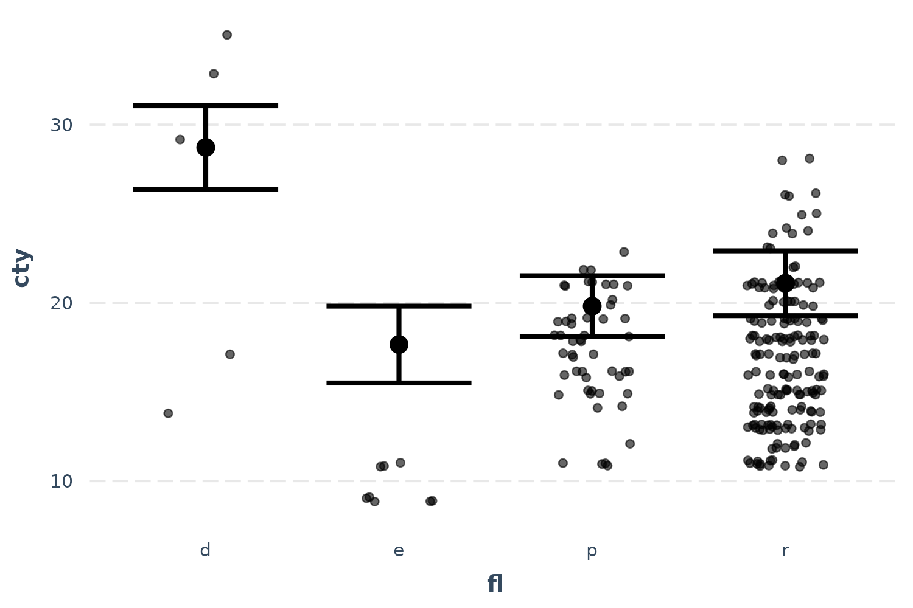
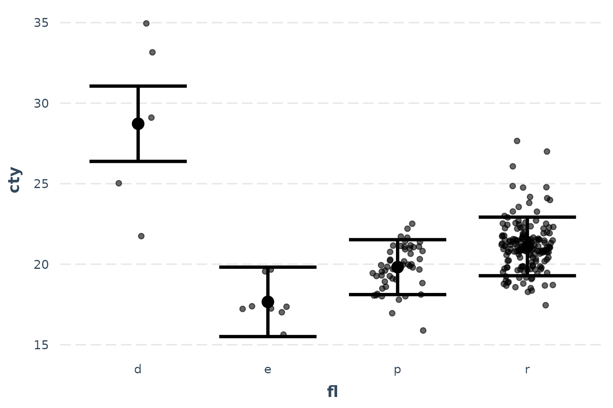

Visualizing regression model predictions
Jacob Long
2023-07-06
Source:vignettes/effect_plot.Rmd
effect_plot.RmdOne great way to understand what your regression model is telling you is to look at what kinds of predictions it generates. The most straightforward way to do so is to pick a predictor in the model and calculate predicted values across values of that predictor, holding everything else in the model equal. This is what Fox and Weisberg (2018) call a “predictor effect display.”
Linear model example
To illustrate, let’s create a model using the mpg data
from the ggplot2 package. These data comprise information
about 234 cars over several years. We will be predicting the gas mileage
in cities (cty) using several variables, including engine
displacement (displ), model year (year), # of
engine cylinders (cyl), class of car (class),
and fuel type (fl).
Here’s a model summary courtesy of summ:
library(ggplot2)
data(mpg)
fit <- lm(cty ~ displ + year + cyl + class + fl, data = mpg[mpg$fl != "c",])
summ(fit)## MODEL INFO:
## Observations: 233
## Dependent Variable: cty
## Type: OLS linear regression
##
## MODEL FIT:
## F(12,220) = 107.19, p = 0.00
## R² = 0.85
## Adj. R² = 0.85
##
## Standard errors: OLS
## -------------------------------------------------------
## Est. S.E. t val. p
## --------------------- --------- ------- -------- ------
## (Intercept) -193.86 50.92 -3.81 0.00
## displ -1.02 0.29 -3.53 0.00
## year 0.12 0.03 4.52 0.00
## cyl -0.85 0.20 -4.26 0.00
## classcompact -2.81 1.00 -2.83 0.01
## classmidsize -2.95 0.97 -3.05 0.00
## classminivan -5.08 1.05 -4.82 0.00
## classpickup -5.89 0.92 -6.37 0.00
## classsubcompact -2.63 1.01 -2.61 0.01
## classsuv -5.59 0.88 -6.33 0.00
## fle -11.06 0.99 -11.13 0.00
## flp -8.91 0.81 -11.03 0.00
## flr -7.62 0.77 -9.96 0.00
## -------------------------------------------------------Let’s explore the effect of engine displacement on gas mileage:
effect_plot(fit, pred = displ)
To be clear, these predictions set all the continuous variables other
than displ to their mean value. This can be tweaked via the
centered argument (“none” or a vector of variables to
center are options). Factor variables are set to their base level and
logical variables are set to FALSE.
So this plot, in this case, is not super illuminating. Let’s see the uncertainty around this line.
effect_plot(fit, pred = displ, interval = TRUE)Now we’re getting somewhere.
If you want to get a feel for how the data are distributed, you can add what is known as a rug plot.
effect_plot(fit, pred = displ, interval = TRUE, rug = TRUE)
For a more direct look at how the model relates to the observed data,
you can use the plot.points = TRUE argument.
effect_plot(fit, pred = displ, interval = TRUE, plot.points = TRUE)
Now we’re really learning something about our model—and things aren’t
looking great. It seems like a simple linear model may not even be
appropriate. Let’s try fitting a polynomial for the displ
term to capture that curvature.
fit_poly <- lm(cty ~ poly(displ, 2) + year + cyl + class + fl, data = mpg)
effect_plot(fit_poly, pred = displ, interval = TRUE, plot.points = TRUE)
Okay, now we’re getting closer even though the predicted line curiously grazes over the top of most of the observed data. Before we panic, let’s introduce another feature that might clear things up.
Partial residuals plots
In complex regressions like the one in this running example, plotting
the observed data can sometimes be relatively uninformative because the
points seem to be all over the place. While the typical effects plot
shows predicted values of cty across different values of
displ, I included included a lot of predictors besides
displ in this model and they may be accounting for some of
this variation. This is what partial residual plots are
designed to help with. Using the argument
partial.residuals = TRUE, what is plotted instead is the
observed data with the effects of all the control variables
accounted for. In other words, the value cty for the
observed data is based only on the values of displ and the
model error. Let’s take a look.
effect_plot(fit_poly, pred = displ, interval = TRUE, partial.residuals = TRUE)
There we go! Our polynomial term for displ is looking
much better now. You could tell in the previous plot without partial
residuals that the shape of the predictions were about right,
but the predicted line was just too high. The partial residuals set all
those controls to the same value which shifted the observations up (in
this case) to where the predictions are. That means the model does a
good job of explaining away that discrepancy and we can see more clearly
the polynomial term for displ works better than a linear
main effect.
You can learn more about the technique and theory in Fox and Weisberg
(2018). Another place to generate partial residual plots is in Fox’s
effects package.
Generalized linear models
Plotting can be even more essential to understands models like GLMs (e.g., logit, probit, poisson).
Logit and probit
We’ll use the bacteria data from the MASS
package to explore binary dependent variable models. These data come
from a study in which children with a bacterial illness were provided
with either an active drug or placebo and some were given extra
encouragement to take the medicine by the doctor. These conditions are
represented by the trt variable. Patients were checked for
presence or absence of the bacteria (y) every few weeks
(week).
library(MASS)
data(bacteria)
l_mod <- glm(y ~ trt + week, data = bacteria, family = binomial)
summ(l_mod)## MODEL INFO:
## Observations: 220
## Dependent Variable: y
## Type: Generalized linear model
## Family: binomial
## Link function: logit
##
## MODEL FIT:
## χ²(3) = 13.57, p = 0.00
## Pseudo-R² (Cragg-Uhler) = 0.10
## Pseudo-R² (McFadden) = 0.06
## AIC = 211.81, BIC = 225.38
##
## Standard errors: MLE
## ------------------------------------------------
## Est. S.E. z val. p
## ----------------- ------- ------ -------- ------
## (Intercept) 2.55 0.41 6.28 0.00
## trtdrug -1.11 0.43 -2.60 0.01
## trtdrug+ -0.65 0.45 -1.46 0.14
## week -0.12 0.04 -2.62 0.01
## ------------------------------------------------Let’s check out the effect of time.
effect_plot(l_mod, pred = week, interval = TRUE, y.label = "% testing positive")
As time goes on, fewer patients test positive for the bacteria.
Poisson
For a poisson example, we’ll use the Insurance data from
the MASS package. We’re predicting the number of car
insurance claims for people with different combinations of car type,
region, and age. While Age is an ordered factor, I’ll
convert it to a continuous variable for the sake of demonstration.
Claims is a count variable, so the poisson distribution is
an appropriate modeling approach.
library(MASS)
data(Insurance)
Insurance$age_n <- as.numeric(Insurance$Age)
p_mod <- glm(Claims ~ District + Group + age_n, data = Insurance,
offset = log(Holders), family = poisson)
summ(p_mod)## MODEL INFO:
## Observations: 64
## Dependent Variable: Claims
## Type: Generalized linear model
## Family: poisson
## Link function: log
##
## MODEL FIT:
## χ²(7) = 184.71, p = 0.00
## Pseudo-R² (Cragg-Uhler) = 0.94
## Pseudo-R² (McFadden) = 0.33
## AIC = 384.87, BIC = 402.14
##
## Standard errors: MLE
## ------------------------------------------------
## Est. S.E. z val. p
## ----------------- ------- ------ -------- ------
## (Intercept) -1.37 0.07 -20.16 0.00
## District2 0.03 0.04 0.60 0.55
## District3 0.04 0.05 0.76 0.45
## District4 0.23 0.06 3.80 0.00
## Group.L 0.43 0.05 8.71 0.00
## Group.Q 0.00 0.04 0.11 0.91
## Group.C -0.03 0.03 -0.88 0.38
## age_n -0.18 0.02 -9.56 0.00
## ------------------------------------------------Okay, age is a significant predictor of the number of claims. Note that we have an offset term, so the count we’re predicting is more like a rate. That is, we are modeling how many claims there are adjusting for the amount of policyholders.
effect_plot(p_mod, pred = age_n, interval = TRUE)
So what does this mean? Critical is understanding the scale of the
outcome variable. Because of the offset, we must pick a value of the
offset to generate predictions at. effect_plot, by default,
sets the offset at 1. That means the predictions you see can be
interpreted as a percentage; for every policyholder, there are between
0.16 and 0.10 claims. We can also see that as age goes up, the
proportion of policyholders with claims goes down.
Now let’s take a look at the observed data…
effect_plot(p_mod, pred = age_n, interval = TRUE, plot.points = TRUE)
Oops! That doesn’t look right, does it? The problem here is the offset. Some age groups have many more policyholders than others and they all have more than 1, which is what we set the offset to for the predictions. This is a more extreme version of the problem we had the with the linear model previously, so let’s use the same solution: partial residuals.
effect_plot(p_mod, pred = age_n, interval = TRUE, partial.residuals = TRUE)
Now we’re getting somewhere. The only difficulty in interpreting this
is the overlapping points. Let’s use the jitter argument to
add a random bit of noise to each observation so we can see just how
many points there are more clearly.
effect_plot(p_mod, pred = age_n, interval = TRUE, partial.residuals = TRUE,
jitter = c(0.1, 0))Because I didn’t want to alter the height of the points, I provided a
vector with both 0.1 (referring to the horizontal position) and 0
(referring to the vertical position) to the jitter
argument.
Categorical predictors
These methods don’t work as clearly when the predictor isn’t
continuous. Luckily, effect_plot automatically handles such
cases and offers a number of options for visualizing effects of
categorical predictors.
Using our first example, predicting gas mileage, let’s focus on the class of car as predictor.
effect_plot(fit, pred = fl, interval = TRUE)
We can clearly see how diesel (“d”) is associated with the best mileage by far and ethanol (“e”) the worst by a little bit.
You can plot the observed data in these types of plots as well:
effect_plot(fit, pred = fl, interval = TRUE, plot.points = TRUE,
jitter = .2)
These seem a bit far off from the predictions. Let’s see if the partial residuals are a little more in line with expectations.
effect_plot(fit, pred = fl, interval = TRUE, partial.residuals = TRUE,
jitter = .2)
Now things make a little more sense and you can see the range of possibilities within each category after accounting for model year and so on. Diesel in particular seems have too few and too spaced out observations to take overly seriously.
Let’s also look at the bacteria example, using treatment type as the predictor of interest.
effect_plot(l_mod, pred = trt, interval = TRUE, y.label = "% testing positive")
Now we can see that receiving the drug is clearly superior to placebo, but the drug plus encouragement is not only no better than the drug alone, it’s hardly better than placebo. Of course, we can also tell that the confidence intervals are fairly wide, so I won’t say that these data tell us anything definitively besides the superiority of the drug over placebo.
You may also want to use lines to convey the ordered nature of this predictor.
effect_plot(l_mod, pred = trt, interval = TRUE, y.label = "% testing positive",
cat.geom = "line")